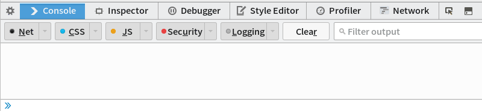

JavaScript: Core Part
Wei-Shao Tang
April 15, 2015
Who am I?
About Myself
- Master in IM, NTU (2014 - )
BS in MIS, NCCU (2010 - 2014)
I'm interested in Web Programming, Functional Programming
I write codes in: Python, JavaScript,
For now, I am learning: Haskell, LISPMy mail is: pa4373 <at> gmail.com
Along with my: Skype, LINE ID: pa4373, https://github.com/pa4373
Why JavaScript?
"JavaScript is eating the world."
- JavaScript is dominant in the World Wide Web.
- #1 Programming language, according to popularity on GitHub and StackOverflow. (source)
- It runs everywhere. Web client, desktop / mobile app, server, embedded system and such.
- It got more than 40K+ jobs on LinkedIn, closely following Java jobs.
- Many languages now can compiled to JavaScript. (web assembly)
Language
Specification vs. Implementation
- Specification
- What makes a piece of code a program, and what its behaviour shall be.
- Syntax (form)
- Semantic (meaning)
- Implementation
- System for executing computer program. (Compiler, Interpreter, Runtime and etc.)
Little Analogy
- "Google that yourself"
- which means finding something with Google Search Engine.
- Reese opened Firefox, went to https://www.google.com/ and searched for something.
- Finch opened Chrome, went to https://www.google.co.uk/ and searched for something.
- Reese and Finch did same things, but with different approaches. (Different implementors)
Back to JavaScript
By syntax rules, the following piece of code is a program:
var id = function (obj) { return obj; };Semantic: declare a function named id which takes one object and return exactly the same object.
What about Implementation?
- Several existing implementations, referred to JavaScript engine:
- the program executes JavaScript, usually called Process Virtual Machine.
- Popular ones such as Google's V8, Mozilla's SpiderMonkey, Rhino
- Don't reinvent the wheel:
- Lots of functions are pre-built, as libraries.
- SpiderMonkey + Gekco \(\rightarrow\) Firefox
- V8 + WebKit \(\rightarrow\) Chrome
- V8 + Few networking libraries \(\rightarrow\) Node.js
- Lots of functions are pre-built, as libraries.
Standardization
- If we have so many implementations, what guarantees that they all follow the specification? (Compatibility)
- Standardization: the process of developing and implementing technical standards.
ECMAScript
- In 1996, Netscape filed the application to ECMA, and it was released as ECMAScript 1 in 1997.
- For now, the mainstream is ECMAScript 5, released in 2009, supported by most of modern browsers.
- While the browsers don't always stick to the specification, it's good to take it as the guideline.
Core Part
Core Part
- It's beneficial to understand the relationship of components of the language, due to the rich (and sophisticated) ecosystem of JavaScript.
- Although you need different knowledge for different environments, the common part stands out as the core part.
- This tutorial is dedicated to the core part of the language.
- We won't talk about how to interact with browsers or write server program, yet...
- INSTEAD we focus on components allows you to mentally model your application.
"A language that doesn't affect the way you think about programming, is not worth knowing." ~ Alan Peris (1922 – 1990)
"No, I just want to get my job done, it doesn't matter my codes all look like the same."- To better understand the usage pattern of others' libraries.
- To design the program easier for others to understand.
- For fun, and make yourself look smart.
- Like learning English, you will do better likely if you appreciate its culture.
REPL (Read–eval–print loop)
- The environment reads input from user, evaluates them as code at the given context, prints the result, and loops back.
- Great for learning, debugging and experimental programming. 
REPL (Read–eval–print loop)
- Most browsers have built-in REPL:
- for Firefox and Chrome: Right click on the web page, choose "Inspect Element" and select "Console" tab on the developer panel.
- Firefox will be used through the following demonstration.
- Type
1 + 1;and then press "Enter", it will output2.
To represent the process of using REPL, we take the following form from now on:
var id = function (obj) { return obj; }; //: undefined- where '//: ' stands for program output. the input can be divided in multiple lines.
- Make a newline instead of evaluating: "Shift" + "Enter"
(
//for single-line comment.)
Exercise (~5 mins)
Fire up REPL and type following statements (ends with ;) in sequence by instructions, try and discuss the outputs of REPL:
// program 1. "I thought Felicity Jones was me."; // program 2. var janeHawkingSay = function () { return "I thought Felicity Jones was me."; }; // program 3, it only works after program 2 is evaluated. janeHawkingSay();Don't copy & paste, muscle memory helps learn a new language.
Some facts about this little exercise
- Each statement ends with semicolon (;)
- Just like each sentence in English ends with period.
- By convention, the naming rule of JavaScript is Camel-Case.
- The indentation use two spaces, not tab.
- When declaring a function, there's one space between
functionkeyword and argument list.
Primitive Type and Variables
REPL as Calculator
We have seen that how to use REPL to do addition:
1 + 1; //: 2Multiplication:
2 * 5 * 13; //: 130Combine them together:
(1 + 1000) * 1000 / 2; //: 500500This does the same for subtraction (-), division (/).
We can also compare them:
2 > 8; //: false10 >= 10; //: true- The statement we've seen so far is called expression, which means it's evaluated by interpreter and the result value is produced and returned.
Wait, what is
false?
Data Type
- Data type is very important, since it determines:
- The possible values (range)
- Operations allowed to be done
- and etc.
- In JavaScript, data type can be categorised into:
- Primitive Types: the basic unit provided by JavaScript.
- Composite Types: can be constructed from primitive values and composite values.
- Special Types:
Null,Undefined. (will talk about it later.)
Primitive Types
- Referred to built-in data structures, and they are:
- Atomic: can't be broken down into smaller data type.
- Immutable: once the value is decided, it can't be changed.
- In ES5, primitive types are:
- Boolean
- Number
- String
- It's fair to assume that
falseseen in the previous slides is type of Boolean.
Boolean Type
- Only contains two values: \(\{ true, false \}\)
- It denotes the truth value of one proposition, such as:
7*7 === 4910 > 2
Logical Operations:
- Take one or two boolean value, produces a new value by:
Negation (not):
!!true; //: falseConjunction (and):
&&true && false; //: falseDisjunction (or):
||false || true; //: trueNegation has higher precedence than conjunction and disjunction.
Number Type
- Only one number type: the double-precision 64-bit binary format IEEE 754 value (number between -(\(2^{53} - 1\)) and \(2^{53} -1\))
- Nah, basically you just need to remember it got double type internally.
- There is no specific type for integers.
- No need to worry about integer overflow.
Everything not within the range goes:
Infinity2 / 0; //: Infinity
Number Type
- Unary operator:
-(signed) - Binary operators:
+,-,*,/,%(mod) Operations on float-point numbers is tricky: more
0.1 + 0.2; //: 0.30000000000000004While normally it didn't affect the usage, sometimes you may need precise result. Scale to integer and dividing later:
(0.1*10 + 0.2*10) / 10; //: 0.3
Number Type
NaN: 'not a number' (although it has number type)Can be made when converting a illegal string to number:
parseInt('oops', 10); //: NaNyou can test a number with
isNaNfunction.isNaN(10); //: false- If isNaN returns false, the input is or can be parsed to number type.
Comparison and Equivalence
You can compare numbers with
>,<,>=,<=.2 >= 8; //: false- The result got boolean type.
- Equivalence is a little tricky:
Stick to
===,!==instead of==,!=0 == false; //: true 0 === false; //: false
Ternary Operator
- An operator in the sense of
IF-THEN-ELSE. PROPOSITION ? EXPRESSION 1 : EXPRESSION 2If PROPOSITION is
truethen return EXPRESSION 1, else return EXPRESSION 2.(2 > 8) ? 689 : 633; //: 633
Variable
- The programs we've seen so far were written in one-line expression.
- We need some way to save the result for later use, at the given context.
- Variable, serving as program's memory, is a popular way to address the problem.
- Variable in the sense of computer architecture, not mathematically.
Variable
- Variable is composed of an identifier and its value. (the value may not be defined.)
Consider the following program:
var x; // x is identifier. //: undefined x; // for now, x has not contained any value, yet. //: undefined x = 3; //: 3 x; // x contains 3 now. //: 3
Declaration
- New local variable is declared with keyword
var, along with identifier. - If you skip
varkeyword, the variable became global, which is very evil. - The identifier is case-sensitive.
Don't need to specify the data type.
var x;
Assignment
To assign a value to a variable, put the value / expression on RHS, the variable on LHS of
=.x = 3; //: 3- When the assignment occurs, the value is returned immediately.
If a variable is declared, but has not been assigned, the value of the variable is
undefined.var x; //: undefined x; //: undefined
Assignment
Assignment can occurs more than one time, with value in different data type.
var x; //: undefined x = 0; //: 0 x = false; //: false
Shortcut
- The following is not necessary to construct program.
Declaration and assignment:
var x = 0; //: undefined // notice that the value is not returned in the case. x //: 0Operator and assignment
+=:var x = 10; //: undefined x += 10 // the same as x = x + 10 //: 20- The same goes with
-=,*=,/=,%=
- The same goes with
null
The value null is a JavaScript literal representing null or an "empty" value, i.e. no object value is present.
null; //: null
null vs undefined
| null | undefined |
|---|---|
| as the parameters of function which is not a object. | the variable is declared but not assigned, yet. |
| as the top of prototype chains | some parameters is missing when the function is applied. |
| the property of object doesn't exist. | |
| the function doesn't return values (void vs undefined) |
Falsy values
- The values which act like
falsein boolean operations. - Falsy values in JavaScript:
false0(zero)""(empty string)nullundefinedNaN(a special Number value meaning Not-a-Number!)undefined || true; //: true
Exercises
- In REPL, use variables, addition / subtraction / multiplication / division to perform the following algorithms. Finally, use comparison to determine the result is correct.
- You shall be familiar with variable, arithmetic operations, comparison, Boolean value
- Mobile Number Magic: (It has to be 9 digits, and you might assume it's 891230567.)
- Write down the first 5 digits.
- Multiple 80 with that number.
- Plus 1 to that number.
- Multiple 250 with that number.
- Plus the last 4 digits, twice!
- Minus 250.
- Using comparison to check if it's your mobile number.
- If it's your number, we're done here. If not, divide it by 2.
- Repeat step 7 again.
- Note: This can be seen as:
- \(2 (a \times 10^{4} + b) = a \times 2 \times 10^{4} + 2b\)
- \(= (a \times 80 + 1) \times 250 + 2b - 250\)
- if a has 5 digits and b has 4 digits, it reflects your mobile number structure.
String
String
String is a finite sequence of characters, usually used to represent text.
'Haaaaave you met Ted?'; //: 'Haaaaave you met Ted?'- To construct a string, put things in double / single quotes (single is preferable.)
There is no specific type for characters.
var char = 'a';
+ and Casting
Consider the program:
var slapCount = 5; //: undefined 'I\'m going to go with ' + slapCount + ' slaps for eternity.'; //: "I'm going to go with 5 slaps for eternity."- Notice that
\as esacpe char before'in the string.
- Notice that
+stands for concatenation when at least one of operand is String.It will attempt to call
toStringmethod on non-string operand.slapCount.toString(); //: "5"
parse* and Casting
parseInt(str, base)parseFloat(str)parseInt('3.1415926', 10); //: 3 parseFloat('3.1415926'); //: 3.1415926 parseFloat('Legen...Wait for it...Dary'); //: NaN- Keep in mind that parseInt better goes with base.
- Anything failed to be parsed will be represented as
NaN
String Has Properties
- Most string properties are accessible in the form of:
- variableName.property
Property can be function, and thus can be applied.
var wetWetWet = 'I feel it in my fingers I feel it in my toes'; //: undefined wetWetWet.length; // property //: 44 wetWetWet.toUpperCase(); // function invocation / application. //: "I FEEL IT IN MY FINGERS I FEEL IT IN MY TOES" wetWetWet.toUpperCase; // refers to function itself //: function toUpperCase() 'I am gonna be angry!'.replace('gonna be ', '').toUpperCase(); //: "I AM ANGRY!"
Some methods on String
- string.charAt(k): get the character at position k, or '' if k is not in the range of string length.
- string.length: get the length of the string
string.replace(searchString, replaceString): Make new string by replacing searchString with replaceString in string
var wetWetWet = 'I feel it in my fingers I feel it in my toes'; //: undefined wetWetWet.length; //: 44 wetWetWet.charAt(13); //: "m" wetWetWet.replace('I', 'i'); //: "i feel it in my fingers i feel it in my toes"
Some methods on String
- string.indexOf(searchString, [position]): the position of the searchString in string, starts from 0, from left to right.
- position: The position to start search, default to 0.
return -1 if not found.
var spainRain = 'The rain of spain falls mainly in the plain.'; //: undefined spainRain.indexOf('ain'); //: 5 spainRain.indexOf('ain', 0); //: 5 spainRain.indexOf('ain', 13); //: 14 spainRain.indexOf('Audrey Hepburn'); //: -1
- 'The rain of spain falls mainly in the plain.'
Some methods on String
- string.slice(start, [end]): capture substring from start to end
- start: the start position of the string for substring, could be negative (count backward from the end.)
end: the end position of the string for substring, could be negative. Defaults to the length of String.
var fixYou = 'Lights will guide you home, and ignite your bones'; //: undefined fixYou.slice(22, 26); //: "home" fixYou.slice(-5); //: "bones"
- string.substring: do not use it since it doesn't support backward counting, slice is superior.
Some methods on String
- string.split(delimeter, [limit]): divide a string to an array by its delimeter
limit: the limit to divided, at most.
var induction = 'To Iterate Is Human, To Recurse Divine'; //: undefined induction.split('To'); //: Array [ "", " Iterate Is Human, ", " Recurse Divine" ] induction.split('To', 2); //: Array [ "", " Iterate Is Human" ]
String is immutable
It cannnot be altered by string[index].
var scientist = 'Nobody said it was easy, it is such a shame for us to part'; //: undefined scientist[0] = 'n'; //: "n" scientist; //: "Nobody said it was easy, it is such a shame for us to part" scientist[2002]; //: undefined- We prefer string.charAt to string[index], since we do not want to deal with
undefined - Usually we generate new string and assign new string to variable.
"Complicated string operation?"

Regular Expression
- Extremely useful on strings operations.
Due to its learning curve, we can't cover here but give you a glimpse today:
var isValidId = /^[A-Z]{1}[1-2]{1}[0-9]{8}$/; //: undefined isValidId.test('E271538163'); //: true- Learning source
Control Structure
Prime Number Test
- We can determine whether a number is prime number or not by:
- for a number \(x\), compute \(\sqrt{x}\)
- we check all prime numbers \(< \sqrt{x}\) one by one, if none of them is a factor of \(x\), \(x\) is a prime number.
Prime Number Test
- We can determine whether a number is prime number or not by:
- for a number \(x\), compute \(\sqrt{x}\)
- we check all prime numbers \(\leq \sqrt{x}\) one by one (Iteration, Loop), if (Condition) none of them is a factor of \(x\), \(x\) is a prime number.
Another Example
- Abs:
- For two numbers \(a, b\), compute \((a - b)\)
- If (Condition) \((a - b) \geq 0\), abs is \((a - b)\), else (Condition), abs is \((a - b) \times (-1)\)
Control Structure
- The examples we've seen above can be described as program running step by step, the same as (imperative) programming languages.
- The program block: a pieces of codes meant to be executed as a unit.
- To control program's behaviour, it can be generalised as:
- Condition: The program block is executed based on the certain condition is satisfied.
- Iteration: The program block executes repeatedly based on the certain condition is satisfied.
if (else if...else)
var a = 9;
var b = 81;
var abs;
abs = a - b; // Compute (a - b)
if ( abs >= 0) { // If (a - b) >= 0, abs is (a - b)
abs = abs;
} else if ( abs < 0) { // If (a - b) < 0, abs is (a - b)*(-1)
abs = abs * -1;
}
abs;
//: 72What abs will be if a = 1812 and b = 1984?
if (else if...else)
if (BOOLEAN_EXPRESSION_1) {
PROGRAM_BLOCK_1;
} else if (BOOLEAN_EXPRESSION_2) {
PROGRAM_BLOCK_2;
} else {
PROGRAM_BLOCK_3;
}- The program check if:
- BOOLEAN_EXPRESSION_1 is evaluated as
True, then PROGRAM_BLOCK_1 is executed, else if - BOOLEAN_EXPRESSION_2 is evaluated as
True, then PROGRAM_BLOCK_2 is executed. else - if the above checks failed, PROGRAM_BLOCK_3 is executed.
- BOOLEAN_EXPRESSION_1 is evaluated as
- In JavaScript, else if / else is optional.
- if statement can be contained in another if statement.
if (else if..else)
Back to abs program, we see:
var a = 9;
var b = 81;
var abs;
abs = a - b; // Compute (a - b)
if ( abs >= 0) { // If (a - b) >= 0, abs is (a - b)
abs = abs;
} else if ( abs < 0) { // If (a - b) < 0, abs is (a - b)*(-1)
abs = abs * -1;
}
abs;
//: 72abs = absis unnecessary (have no effects on program), if block can be omitted.- else if part then will be if part.
var a = 9;
var b = 81;
var abs;
abs = a - b; // Compute (a - b) as abs
if ( abs < 0) { // If (a - b) < 0, abs is (a - b)*(-1)
abs = abs * -1;
}
abs;
//: 72The program is cleaner, and the logic is the same.
while
// Russian roulette program
var bullet = 3;
var times = 1;
var rotate;
var isDead = false;
while (times !== 10) {
rotate = Math.floor( Math.random() * ( 1 + 6 - 1 ) ) + 1;
// For now, you only need to know RHS produces random number from 1 to 6.
if (rotate === bullet) {
isDead = true;
break;
}
times = times + 1;
}
isDead;
//: Nah, it's either true or false, but I can't tell you.
times;
//: Nah, I can't tell you either, but it can tell you when you're dead (or live, if you went through the final round).while
while (BOOLEAN_EXPRESSION) {
PROGRAM_BLOCK;
}- Entry: When the program is about to enter the loop, it evaluates BOOLEAN_EXPRESSION. If it turns out to be
true, the program goes into PROGRAM_BLOCK, or just skip.
- Loop: When PROGRAM_BLOCK is executed, it evaluates BOOLEAN_EXPRESSION again. If it turns out to be
true, the program goes into PROGRAM_BLOCK again, or just skip. Termination: The loop terminates when BOOLEAN_EXPRESSION is evaluated as
false.break,continue:break: jumps out of loop no matter what.continue: go through the next iteration.
while
// Russian roulette program
var bullet = 3;
var times = 1;
var rotate;
var isDead = false;
while (times !== 10) {
rotate = Math.floor( Math.random() * ( 1 + 6 - 1 ) ) + 1;
// For now, you only need to know RHS produces random number from 1 to 6.
if (rotate === bullet) {
isDead = true;
break;
}
times = times + 1;
}
isDead;
//: Nah, it's either true or false, but I can't tell you.
times;
//: Nah, I can't tell you either, but it can tell you when you're dead.times !== 10: Boolean Expression.break: jumps out of loop since you're dead already.times = times + 1: It guarantees that your program terminates at last.- How many rounds the player has to play if he / she is lucky enough to stay alive?
Exercises for while
- Refine Russian roulette program by introducing
playervariable.playercan be either1or2. The program shall show that it indicates a death duel (Program stops when either player 1 or player 2 winds up dead.)
for
Recall while loop in Russian roulette program:
var times = 1;
...
while (times !== 10) {
...
times = times + 1;
}The pattern is so common that it leads to the birth of for:
for (var times = 1; times !== 10; times = times + 1) {
...
}for
for (INITIALISER; CONDITION; ITERATOR) {
PROGRAM_BLOCK;
}can be expanded to:
INITIALISER;
while (CONDITION) {
PROGRAM_BLOCK;
ITERATOR;
}for
Recall prime test problem.
var n = 8849;
var sqrtOfN = Math.sqrt(n);
var isPrime = true;
for (var i = 2; i < sqrtOfN; i = i + 1) {
if (n % i === 0) {
isPrime = false;
break;
}
}
isPrime;
//: true- Notice i starts from 2.
- n % 0 produces
NaN
- n % 0 produces
- Wait, you said we only need to check the primes \(\leq \sqrt{x}\)!
- However, checking all numbers includes checking those are prime. (weaker)
Exercises for for
- Calculate the sum of 1 to 1000, using for.
- Explain why \(\frac{(1 + n)n}{2}\) is superior.
Exercises
- Collatz conjecture: for any natural number \(n > 1\), if:
- \(n\) is odd: verify \(3n + 1\)
- \(n\) is even: verify \(\frac{n}{2}\)
- recursively, and \(n\) ends up with 1. reference
- Using while, and for to verify Collatz conjecture holds for 1 - 10000;
Function
Prime Test (again?)
var n = 8849;
var sqrtOfN = Math.sqrt(n);
var isPrime = true;
for (var i = 2; i < sqrtOfN; i = i + 1) {
if (n % i === 0) {
isPrime = false;
break;
}
}
isPrime;
//: trueWhat if we want to check whether 15919 is a prime number?
Easy, just copy & paste and change n:
var n = 15919;
var sqrtOfN = Math.sqrt(n);
var isPrime = true;
for (var i = 2; i < sqrtOfN; i = i + 1) {
if (n % i === 0) {
isPrime = false;
break;
}
}
isPrime;
//: trueOkay, what about 15791 15797 15803 15809 15817 15823 15859 15877 15881 15887 15889 15901 15907 15913 15919 15923 15937 15959 15971 15973 15991 16001 16007 16033 16057 16061 16063 16067 16069 16073 .......
- As you can see, these codes is basically the same, except for n.
- We can refine the code by parameterisation and make it a subprogram.
var isPrime = function (n) {
var sqrtOfN = Math.sqrt(n);
var isPrime = true;
for (var i = 2; i < sqrtOfN; i = i + 1) {
if (n % i === 0) {
isPrime = false;
return isPrime;
}
}
return isPrime;
};
//: undefined
isPrime(15907);
//: true- Here, we take n as the parameter of the function.
- It return values either true or false;
- Note you can totally discard isPrime by simply return true or false.
- Ugh, you got two isPrime, which ones you're talking about?
Function
- Definition
- Function as subprogram
- Function as mapping from domain to range (mathematical definition)
- However, in JavaScript, the border of definitions become blurred.
- In JavaScript, function can be seen having two phases:
- Definition: define the function body, assign it to a variable.
- Invocation / Application: execute the function body by giving the parameters to function variable.
How to define a function
var FUNCTION_NAME;
FUNCTION_NAME = function (p1, p2, p3.....) {
PROGRAM_BLOCK;
};- The function body which takes p1, p2, p3... as parameters and executes PROGRAM_BLOCK, is assigned to FUNCTION_NAME.
You might see the following as well, but it didn't give a sense of function as data.
function FUNCTION_NAME (p1, p2, p3......) { PROGRAM_BLOCK; }
How to apply function
FUNCTION_NAME(p1, p2, p3......);
//: return value or undefined.- Simply supply parameters to function.
PROGRAM_BLOCK may contain
returnkeyword, which takes one value as the result of the function. If it's not given, function will returnundefinedinstead.var sumOf = function (n) { var sum = ( 1 + n ) * n / 2; return sum; }; //: undefined; sumOf(1000); //: 500500 var sumOf2 = function (n) { var sum = ( 1 + n ) * n / 2; }; //: undefined sumOf2(1000); //: undefined
When to define a function
- You discover duplicate code and common pattern, and you need to abstract it.
- We've seen it before.
You discover the mathematical relation of input and output.
var fibonacci = function (x) { if (x === 1 || x === 2) { return 1; } else if (x > 2) { return fibonacci(x - 1) + fibonacci(x - 2); } };
- It just a plain translation from the definition of Fibonacci number.
Parameter
- JavaScript functions do not check the number of arguments received.
- If you supply more arguments than those you define, the remaining will be omitted.
If you supply less, the rest will be set as
undefined.var fn = function (a, b, c) { return a * b * c; }; fn(1, 2, 3); //: 6 fn(1, 2); //: NaN (any number multiplies undefined equals to NaN) fn(1, 2, 3, 7, 9); //: 6
Default Values
JavaScript doesn't support default values of parameters by default, but it can be addressed via:
var fn = function (a, b) { a = a || 3; b = b || 7; return a * b; }; fn(); //: 21 fn(9); //: 63JavaScript evaluates boolean expression in the form of
true || (anything). In this case, ifaisundefined, if evaluates as3;
Anonymous Function (\(\lambda\))
- Recall when we define a function, we define the function body first and assign it to a variable later.
- Instead of assigning it to a variable, the function body can be used directly, it's called
anonymous functionin such context. For example, execute function right after the definition:
(function (a, b) { return a * b; })(7, 6); //: 42
Function as Data
- In JavaScript, you can pass function as data to other function, return function out of function.
- You can construct your logical components in the unit of functions, and junction them together.
- It's quite common pattern in JavaScript: using function as function callback.
var repeat = function (f, times) {
return function (n) {
var v = n;
for (var i = 0; i < times; i = i + 1) {
v = f(v);
}
return v;
};
};
//: undefined
var square = function (n) {
return n * n;
};
//: undefined
var quad = repeat(square, 2);
//: undefined
quad(3);
//: 81- We use square function to make a new function quad which is: \(quad(x) = square(square(x))\)
Scope
- In JavaScript, when you invoke a function, you create a local scope.
- When you access a variable in a function, it first lookups the variables in the scope (parameters, local variables), if it didn't find a one, it lookups outside the functions. (Bubble up)
var isPrime = function (n) {
var sqrtOfN = Math.sqrt(n);
var isPrime = true;
for (var i = 2; i < sqrtOfN; i = i + 1) {
if (n % i === 0) {
isPrime = false;
return isPrime;
}
}
return isPrime;
};- Due to the declaration of
isPrimein the function, allisPrimeoccurs in the function act as a concrete variable different from the function name.
Hosting
Consider the program:
var x = 10; var fn = function () { return x; var x = 100; }; fn(); //: ?fn()will be 10? or 100?
undefinedactually, but why?The code actually looks like this:
var x = 10; var fn = function () { var x; // x is undefined then. return x; x = 100; }; fn(); //: undefined
- When you invoke a function, the interpreter scans through your function body and define the variables you declare first (not assigned, yet.) and then it executes line by line.
- So, in reality, it's a good practice to define your variables at top, then your program logic.
Closure
var x = 10;
var fn = function (n) {
return n * x;
};
fn(10);
//: 100
n;
//: undefined
x = 1000;
fn(10);
//: 10000- Functions that refer to independent (free) variables. In other words, the function defined in the closure 'remembers' the environment in which it was created.
- Since
fnhas access to REPL,fn's behaviour is dependent on REPL. (if REPL will be modified later)
- Since
By-Value vs By-Reference
- When we talk about variable as parameters of the function:
- By-value: the program will make a copy of variable and operate on the copy.
- By-Reference: the program will operate directly on the variable.
- In JavaScript, variables which have primitive type (boolean, number, string) goes by-value, and those with composite types (object, array..) go by-reference.
By-Value:
var fn = function (x) {
x = 1000;
return x;
};
//: undefined
var n = 10;
//: undefined
fn(n);
//: 1000
n;
//: 10By-Reference:
var fn = function (x) {
x.push(0);
return x;
};
//: undefined
var c = [];
//: undefined
fn(c);
//: [0]
c;
//: [0]Exercises
- Recall abs program, choose proper parameters and make it a function.
Design a function fn which gets off work: Write a function which takes a function f and produces another function which only works between 9 AM - 5 PM. Your code might work like this:
var square = fn(function (e) { return e*e; }); square(2); // It's 8:50 now //: "I'm off work now, leave me alone!" square(2); // It's 9:01 now //: 4
To do so, you need to know the current time:
var currentDate = new Date(); var currentHour = currentDate.getHours(); currentHour; //: 0 (it varies)- It's actually a quite common pattern in functional programming, to compose new functions by mixing them together.
- We'll introduce the concept of object later.
Array
What does an array look like?
var primes = [2,3,5,7,11,13,17,19];
//: undefined
primes
//: [2,3,5,7,11,13,17,19];
primes[3];
//: 7
primes[89];
//: undefined| Index | Value |
|---|---|
| 0 | 2 |
| 1 | 3 |
| 2 | 5 |
| ... |
Array
- Like list.
- Used to represent sequential data.
- Neither the length nor the types of an array are fixed.
- However, keep it the same type helps design / use algorithm.
Access its value by a given index, where the index starts from 0.
primes[2]; //: 5where 2 is the index, and 5 is the value.
Construct Array
- Either by array literal or array.push method:
var primes = [2,3,5,7,11,13,17,19]; // array literal
//: undefined
var primes = []; // define a empty array
//: undefined
primes.push(2);
//: 1
primes.push(3);
//: 2Add element to an array
The index increases incrementally when new element is added.
primes.push(23); //: 9 primes[8]; //: 23- array.push method return the length of the new-added array.
Some use
primes[primes.length] = 23, which returns the value.
Remove element from an array
- Either by array.pop or array.splice method:
- array.pop(): remove the last item and return it.
array.splice(s, c, [items]): remove c items from s, added items if supplied. (return the deleted part.)
var primes = [2,3,5,7,11,13,17,19]; //: undefined primes.pop(); //: 19 primes; //: Array [ 2, 3, 5, 7, 11, 13, 17 ] primes.splice(1, 2, 0, 0); //: Array [ 3, 5 ] primes; //: Array [ 2, 0, 0, 7, 11, 13, 17 ];
Lookup / Modify the array
Remark: we can access the value by a given index:
primes[3]; //: 7To change its value, simply assign:
primes[3] = 3; //: 3; primes[3]; //: 3
Some properties / methods on Array
- array.length:
returns the length of the array.returns (the maximum index + 1) of the array
var primes = [2,3,5,7,11,13,17,19]; //: undefined primes[8849] = 91529; //: 91529 primes.length; //: 8850 primes; //: Array [ 2, 3, 5, 7, 11, 13, 17, 19, <2 empty slots>, 8840 more… ]Stick to array.push or arr[arr.length]
Some properties / methods on Array
- array.slice(start, [end]): make a new array as sub-array from the original one
- start: the start position of the array for sub-array, could be negative (count backward from the end.)
end: the end position of the array for sub-array, could be negative. Defaults to the length of array.
var primes = [2,3,5,7,11,13,17,19]; //: undefined primes.slice(3, 7); //: Array [ 7, 11, 13, 17 ] primes; //: Array [ 2, 3, 5, 7, 11, 13, 17, 19 ]
- Don't be confused with array.splice.
Sorting
Consider the following program:
[2,3,5,7,11,13,17,19].sort(); //: Array [ 11, 13, 17, 19, 2, 3, 5, 7 ]- By default, the array sorts according to each character's Unicode value, converted to String first if not.
To make use of array.sort function, we need to supply a comparison function.
Sorting
The comparison function is supplied as parameter of sort function.
[2,3,5,7,11,13,17,19].sort(function (a, b) { return (a - b); }); //: Array [ 2, 3, 5, 7, 11, 13, 17, 19 ]- a and b denotes arbitrary items.
- The comparison function denotes the relations of two items by:
- \((a - b < 0) \rightarrow (a < b)\)
- \((a - b = 0) \rightarrow (a = b)\)
- \((a - b > 0) \rightarrow (a > b)\)
- The sort method will swap if the return value is larger than 0.
By default it sorts in ascending order. To sort in descending order, simply return
(b - a)[2,3,5,7,11,13,17,19].sort(function (a, b) { return (b - a); }); //: Array [ 19, 17, 13, 11, 7, 5, 3, 2 ]- How the relations are represented in the above function?
How you would write a comparison function to make it keep the array the same? (unsorted)
Exercises
- Selection Sort (ascending)
- For one unsorted array: [6, 9, 7, 2, 3]
- Compare the first element (6 in the case) with the rest by each, swap them if the first is larger than any in the rest.
- In the case, 6 will be swapped with 2. Since we knew \(6 > 2\), and those compared with 6 \(> 6\), we knew those compared with 6 \(> 2\) (Transitive relation)
- Selection Sort (ascending)
- After one iteration, the first one is the smallest in the array. ([2, 9, 7, 6, 3])
- Start again from the second element (9 in the case), and the third..., to the end of the array.
- See visualisation
- Selection Sort with Comparison Function
- Refine your sorting algorithm with one function parameter, known as comparison function, which is the same as array.sort
Object
Object
- An object is a collection of properties. Properties could be:
- Primitive types: Number, String, Boolean
- Composite types: Object
- Object could be: Function, Array
- Function in object is called method.
Whey do we need object, after all?
- To define a square in Cartesian coordinates system, we have two different ways:
- Records four points such as (0, 0), (4, 0), (0, 4), (4, 4)
- Records the center point (2, 2) and the length of its sides (4)
- Diagonal is always larger than the side.
To calculate the area of the square, using the definition 1:
var p1x = 0; var p1y = 0; var p2x = 4; var p2y = 0; var p3x = 0; var p3y = 4; var p4x = 4; var p4y = 4; var distance = function (p1x, p1y, p2x, p2y) { return Math.sqrt(Math.pow(p1x - p2x, 2) + Math.pow(p1y - p2y, 2)); }; var squareArea = function (p1x, p1y, p2x, p2y, p3x, p3y, p4x, p4y) { var d1 = distance(p1x, p1y, p2x, p2y); var d2 = distance(p1x, p1y, p3x, p3y); var length = (d1 <= d2) ? d1 : d2; // (d1, d2 might be only diagonal / side.) return length * length; }; squareArea(p1x, p1y, p2x, p2y, p3x, p3y, p4x, p4y); //: 16
One day, your lead programmer came and says: "Hey, let's do that in def 2!"
var c1x = 2; var c2y = 2; var side = 4; var squareArea = function (side) { return side * side; };The code is prettier, but every occurrence of old
squareAreaneed to be modified, along with the coordinates of squares.
- Imagine Find / Replace for few hundred times...
Let's make a object of it!
- In fact, what we REALLY care about is the square, not its coordinates / sides.
- We want to know the area of the square, right?
Wouldn't it be nice if we have something like:
var squareArea = function (square) { ...... }; squareArea(square); //: 16Let's refine our code then.
var square = {
p1: {
x: 0,
y: 0
},
p2: {
x: 4,
y: 0
},
p3: {
x: 0,
y: 4
},
p4: {
x: 4,
y: 4
}
};(Cont'd)
var distance = function (p1, p2) { return Math.sqrt(Math.pow(p1.x - p2.x, 2) + Math.pow(p1.y - p2.y, 2)); }; var squareArea = function (s) { var d1 = distance(s.p1, s.p2); var d2 = distance(s.p1, s.p3); var length = (d1 <= d2) ? d1 : d2; return length * length; }; squareArea(square); //: 16
Create Object
- We create object by object literal:
- object literal: {key: value, [key: value...]}
- Key is unique.
- we created a nested object. (since the value of
p1is a object and etc.)
You can create new property on the fly:
var obj = { a: 0 }; obj.b = 1; obj; //: Object { a: 0, b: 1 }
Access object
We access the value of properties by pointing to their keys, such as:
square.p1.x; //: 0, which is equals to: var p1 = square.p1; p1.x; //: 0Note: you can access properties in the form of square['p1'], too. (useful when you need to determine key on runtime.)
Let's rewrite in Def. 2
Notice the parameters of squareArea is the same as the previous one.
var square = { c1: { x: 2, y: 2 }, side: 4 }; var squareArea = function (s) { return s.side * s.side; }; squareArea(square); //: 16
Methods
When you put function into the object:
var square = { c1: { x: 2, y: 2 }, side: 4, getArea: function() { return this.side * this.side; } }; square.getArea(); //: 16thisis a reference to the object itself.array.sort and such are all object methods.
this
thisdepends on the current context where function is invoked:// Notice we assign the function body instead of calling it. var area = square.getArea; area(); //: NaNSince when the function is invoked, the current scope refers to the function body itself and outer (recall closure), and there is no
sidedefined.
Function vs. Method
- We put function in a object (method) when it's dependent of the object.
- A good indicator is the use of
this. - Of course, it might arise political wars. : ) (Critical thinking, and only the paranoid survive!)

Create object based on the existing one.
The object is by-reference, so the following don't copy new object. (They refers to the same object.)
var obj = { foo: 'bar' }; var newObj = obj; newObj.baz = 'qux'; obj.baz; //: 'qux'
- To construct a new object, we can use:
- Object.create (ECMAScript 5)
newKeyword- function returning new object
- We sticks to the first for now.
var obj = {
foo: msg,
baz: 'qux'
};
var obj1 = Object.create(obj);
var obj2 = Object.create(obj);
obj1.baz = 'Lalala';
obj2.baz;
//: 'qux'Construct Playlist
Given the following playlist:
Track Name Artist Duration (s) ---------- ------ ------------ God Only Knows The Beach Boys 171 Piano Man Billy Joel 338 New York, New York Frank Sinatra 206 My Way Frank Sinatra 276 New York, New York Cat Power 120 Downtown Train Everything but the Girl 184 I'm Gonna Be (500 Miles) The Proclaimers 217 La Vie En Rose Cristin Milioti 115Can you choose proper data structure for it?
- Since it's a playlist, an array is a reasonable choice.
How can we represent one song? Maybe using array:
var song = ['God Only Knows', 'The Beach Boys', 171];
and access the property by song[0]....
- Nah, it sucks.
- We cannot determine the relation between properties and index directly!
Using object:
var song = { title: 'God Only Knows', artist: 'The Beach Boys', duration: 171 };And we can puts it in an array:
var playlist = [ { title: 'God Only Knows', artist: 'The Beach Boys', duration: 171} ...... ];
Exercises
- We can answer questions like:
- What songs is performed by Frank Sinatra?
- Going through the list and find those performed by him.
- Can you sort the playlist by its duration?
- Recall array.sort method?
- List all artists who perform New York, New York
- Going through the list and find those performed the song.
- How many object exist in the code?
- 8? Are you sure...
- What songs is performed by Frank Sinatra?
Inheritance
- JavaScript uses prototype-based inheritance, by referring to existing object to extends its behaviours.
- Each object may has a prototype reference, which points to the object they want to inherit.
- when you access properties, it searches from itself, then its prototype object. If the object is found and property exists, then it stops. If not, it searches from its prototype object again.... recursively, to
Objector failed when it cannot find prototype object.
var a = {
foo: 'bar'
};
var b = Object.create(a);
a.isPrototypeOf(b);
//: true
Object.getPrototypeOf(b) === a;
//: true, it refers to the same memory location.
b.foo;
//: "bar"
b.foo = 'baz';
b.foo;
//: "baz", since b has its own foo property now, (what about a.foo?)- So, instead of class-based, prototype-based much more like:

- To see more about prototype.
Primitive types: object or not?
- Recall the definition of object:
- An object is a collection of properties.
- str.toUpperCase is a function, and it got a property called toUpperCase, so it's a object!?
str.toUpperCase is actually:
'It\'s over now, the music of the night!'.toUpperCase(); //: "IT'S OVER NOW, THE MUSIC OF THE NIGHT!" // This is actually done via a wrapper object: var str = new String('It\'s over now, the music of the night!'); str.toUpperCase(); //: "IT'S OVER NOW, THE MUSIC OF THE NIGHT!"If you use typeof to check it's type.
typeof str; //: "object" typeof 'It\'s over now, the music of the night!'; //: "string"Warning: typeof could be very deceiving, and typeof is a operator, not a function.
Exercises
- After the accident of Opéra de Paris, the Phantom was on the run. He had an income of 22K and he needed to pay 15K to keep himself alive. Design an phantom object which helps him calculate how much he still had.
- Design an object representing your mobile, and explain your design.